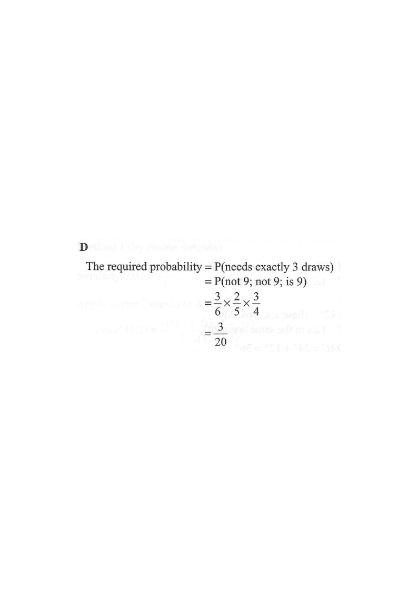

Step 1 — The box: six balls {7, 8, 8, 9, 9, 9}. Five of them are “not 9”, three are “9”.

John stops as soon as he draws a $9$. To need exactly 3 draws, the first two draws must not be $9$, and the third draw must be $9$:
not 9 → not 9 → 9
Restate the event in words before computing — this is the key step in exam MC.
Total balls $=6$; balls that are not $9$ are $7,8,8$, i.e. $3$ balls.
$P(\text{not } 9 \text{ on draw } 1)=\dfrac{3}{6}$
Drawing is without replacement, so the box shrinks to 5 balls next.
After one non-$9$ ball is removed, $2$ non-$9$ balls remain out of $5$ total.
$P(\text{not } 9 \text{ on draw } 2 \mid \text{not } 9 \text{ on draw } 1)=\dfrac{2}{5}$
The condition changes the numbers: numerator and denominator both decrease by 1.
Now $4$ balls are left. Two non-$9$ balls have been taken, so all $3$ of the “$9$” balls remain:
$P(9 \text{ on draw } 3 \mid \text{two non-}9\text{s taken})=\dfrac{3}{4}$
Always re-count the balls remaining after each removal.
The three events happen one after another along a single branch of the tree, so multiply:
$P(\text{exactly }3\text{ draws})=\dfrac{3}{6}\times\dfrac{2}{5}\times\dfrac{3}{4}$
$\dfrac{3}{6}\times\dfrac{2}{5}\times\dfrac{3}{4} =\dfrac{1}{2}\times\dfrac{2}{5}\times\dfrac{3}{4} =\dfrac{1}{5}\times\dfrac{3}{4} =\dfrac{3}{20}$
Cancel as you go: $\frac{3}{6}=\frac12$, then the 2’s cancel.
Question. A box contains 7 cards numbered \(4,4,4,6,6,9,9\). John draws cards at random one by one without replacement and stops as soon as he draws a card numbered \(9\). Find the probability that he needs exactly 3 draws.